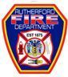

Rutheford Police Department
The RDP's priorities include the protection of life, liberty, and property to ensure all Borough residents and visitors experience a quality of life second to none.

Rutherford First-Aid Ambulance Corps
The Rutherford First-Aid Ambulance Corps is a volunteer, non-profit organization dedicated to providing Emergency Medical Services to our residents.

Rutherford Volunteer Fire Department
Protecting over 18,000 residents within an area of 2.4 square miles and consists of five fire companies and operate out of three firehouses strategically located throughout the Borough.